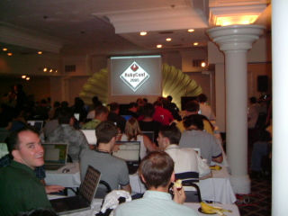
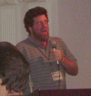
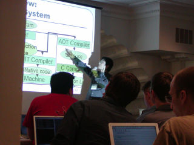
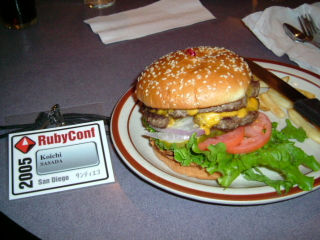
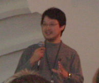
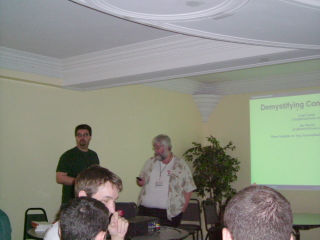
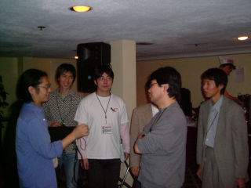

Ruby Conference 2005 レポート
まとめた人：ささだ
はじめに
先月 10 月 14 日 (金) から三日間、Fifth International Ruby Conference、通称 RubyConf 2005 がアメリカはサンディエゴで行われました。この日程は、同じくサンディエゴで 10 月 16 日 (日) から行われた OBJECT-ORIENTED PROGRAMMING, SYSTEMS, LANGUAGES and APPLICATIONS 2005、通称 OOPSLA’05 に日程をあわせて行われました。
今回はなんと総参加者が 200 人弱と、去年が 60 人ほどだったものに比べ、大変規模が大きくなりました。また、日本人参加者がなんと 14 人！ 去年までの日本人参加者の最大数は 3 人だったそうなので、これまた凄い人数です。Ruby on Rails 効果による Ruby の人気と、OOPSLA に日程と場所を合わせた効果だと思いますが、それにしても Ruby の注目度は非常に高いことが伺えます。
本稿では RubyConf 2005 に出席した人の生の声を中心にまとめたいと思います。
RubyConf 2005 について
- 開催日
- 2005 年 10 月 14 日 (金) 〜 16 日 (日)

- 開催場所
- Lafayette Hotel and Suites, San Diego, CA, USA
- 開催母体
- Ruby Central
- 中心スタッフ
- David Alan Black and Chad Fowler
- 参加者
- 200 人くらい
カンファレンスの内容
プログラムは会場で配布された Agenda1 より引用します。
また、各発表について、独断と偏見で一言コメントを付けさせていただきます。
RubyConf 2005 前夜
前日の昼から Rubyist 達がホテルに集っていた。ロビーに入ったら、テーブルを囲んで PowerBook を開いている集団が目にとまり驚いた。夜は Gordon Biersch というブリュワリーレストランに行って、皆で食事をした。
Friday, October 14
- 8:30 Continental breakfast
- 朝ごはんは Continental breakfast と、ホテル側の用意した暖かい食べ物があった。
- 9:15 Welcome
- David Black の開会の言葉。このホールは Top Gun の撮影で使われたとか。

- 10:00-12:00 Panel 1
- Francis Hwang - Top-to-bottom Testing in Ruby
- いきなり予定のプログラムと違っていてびびったのだけれど、テストをどうするか、という話。
- Akira Tanaka - open-uri: easy to use and extensible virtual file system
- 田中さんの「いかに使いやすい拡張ライブラリを作るか」講座。なかなか稀有な話。
- Francis Hwang - Top-to-bottom Testing in Ruby
- 12:00 Lunch
- ランチはカンファレンス側で用意。ちゃんと座って食べる食事でした。
- 13:30-16:30 Panel 2
- Charles Nutter - JRuby: A Ruby VM in Java
- JRuby の進捗と今後。Continuation Passing Style にするらしいんだけれど、どれくらい有効なのかな。
- Koichi SASADA - YARV Progress Report
- ささだの YARV の進捗報告と、今後の話。でも、会場に伝わったのはジョークだけだという。
- Eric Hodel - Reimplementing Ruby
- ruby2c を利用して、Ruby で Ruby を実装しましょう、という話。どれくらい有効なのかな。
- Charles Nutter - JRuby: A Ruby VM in Java
- dinner (on your own)
- 日本人何人かで近所のデニーズに行きました。

- Yukihiro “matz” Matsumoto - Roundtable
- 会場からの英語での質問にまつもとさんが答えまくる、という企画。ジョークを交えた回答を即座にできて、まつもとさんスゲー、と思っていた 1 時間半。
 (写真は被告人席に座っているまつもとさん)
(写真は被告人席に座っているまつもとさん)
Saturday, October 15
-
8:30 Continental breakfast
- 9:00-11:30 Panel 3
- Kevin Baird - Refactoring No Clergy
- 「No Clergy」という音楽作品を Python で書いていたが、Ruby に書き直した経験を語る。
- Brent Roman - Embedding Ruby into a Robotic Marine Laboratory
- Ruby であるロボットを動かす、という話。Ruby の何が良かったとか。
- Austin Ziegler - PDF::Writer
- Pure Ruby で実装してある PDF::Writer の紹介。すでに takahashi メソッドを実装済みらしい。
- Kevin Baird - Refactoring No Clergy
-
12:00 Lunch
- 13:30-17:00 Panel 4
- Ryan Davis - Polishing Ruby: Power Tools and Toys
- 彼の作っているテストツール、プロファイラ、RubyInline、ruby2c などの紹介と、それを利用した実行時最適化のデモ。
- Jim Weirich - Creating Domain Specific Languages in Ruby
- DSL を Ruby で表現するのは楽だね、という話。ジャグリングを実際にしていたんだが、マイクでぜぇぜぇ言うのはちょっと。
- Karlin Fox - System Testing in Ruby with Systir
- 「story-driven development という概念を導入している。書いたストーリーがそのままシステムテストになるらしい。ストーリーを書いてから開発する」(卜部さん日記より引用)、という話らしい。
- Ryan Davis - Polishing Ruby: Power Tools and Toys
- 突発のアナウンス大会
- 数十人出てきて各人 1、2 分で好きなことをアナウンス。「今晩このテーマでハックするよ」とか、色々。
- 18:00 Conference Dinner
- この日は夕飯が出た。まぁ、量は多いよね。
- after dinner Keynote address: Yukihiro “matz” Matsumoto
- スライド: http://www.rubyist.net/~matz/slides/rc2005/
- 30 分ほど遅れてのスタートだが、まつもとさんが Ruby の今後の機能をプレゼン。枕に「日本人は生活必需品作るのが得意だよね。TOYOTA とか HONDA とか SONY とか PANASONIC とか……Ruby とか」として会場沸く。1 トピックずつ質問を受け付けたので、ちょっとグダグダ感があって、最後のほうのトピックは飛ばし飛ばしになってしまっていたのが残念。

Sunday, October 16
-
8:30 Continental breakfast
- 9:00 Panel 5
- David Heinemeier Hansson - The State of the Rails
 言わずもがなな Ruby on Rails 開発者の話。技術的なことはほとんどなかった。
言わずもがなな Ruby on Rails 開発者の話。技術的なことはほとんどなかった。
- Nathaniel Talbott - Rails: Serving the long tail in 1883 and 2005
- アメリカの歴史と Rails の歴史を重ねた話。
- Aslak Hellesoy - Continuous Integration with DamageControl
- Damage Control の紹介。
- David Heinemeier Hansson - The State of the Rails
- 12:00 Lunch
- RubyConf 2005 最後のランチ。
after lunch Workshops
- David Heinemeier Hansson - Hands-on Rails
- Rails 次期バージョンの新機能についての説明。Hands on という感じではなかった。
- Jim Weirich & Chad Fowler - Continuations Demystified
- Continuation って何？ というところから、Continuation を利用して throw/catch を自分で作ってみよう、という課題までを用意した意欲的なワークショップ。いきなりゼルダの伝説 (時のオカリナ。シナリオが Continuation に絡むらしい) が始まってびっくりした。

参考資料
卜部さんの日本語の実況ログ
卜部さんが各セッションの模様を聞きながら日記に書く (！) という離れ技をやってくれたので、詳細はこちらをご覧ください。日本語です :)
- http://mput.dip.jp/mput/?date=20051015
- http://mput.dip.jp/mput/?date=20051016
- http://mput.dip.jp/mput/?date=20051017
スライド
- Ryan Davis が RubyConf 2005 の発表で利用したスライドを集めて公開しています：RubyConf 2005
感想
日本人参加者より RubyConf 2005 の感想を頂きました。
まつもとさん
キーワードは「多かった」でしょうか。
- 出席者が多かった
- Ruby で食べてる人が多かった
- 日本人出席者が多かった
- 料理の量が多かった
江渡さん
Exciting!
まつもとさんのプレゼンに感動しました。いまから Ruby 2.0 が楽しみです。
“Wild and Weird” な Ruby 万歳!
卜部さん
初めての海外旅行、初めての RubyConf でしたが大変興味深い発表ばかりでとても有意義でした。本当は議論とかいろいろ参加したかったけどさすがにそこまでの会話スキルはなくてあまり参加できなかったのが残念です。ぜひ次回以降も条件 (予算とか……) が許せば参加したいと思います。
新井さん
まだ Ruby を始めてから二年くらいの私ですが、仕事をすべて Ruby で片付けるようになり、RubyConf にも参加してみました。感想は、とにかく Nice なコミュニティだということです。
もう一つの感想は Matz は魅力的な人物だなあ、ということです。Round Table で質問にウィットの効いた答えを返す様子はカリスマを感じました。
私も Ruby に対して何か貢献できるかもしれないという思いを抱いたカンファレンスでした。
Ruby == Happy Hacking
森脇さん
空港で盗難にあいました。貴重品は必ず機内持込しよう！ そういう感想はさておき。
四方八方 Ruby Fan という熱気を浴び、日頃名前しか目にしない方々とお話したりして、想像と現実の調整ができました。 セッションは、知らないことだらけということではなかったので一安心 (？) だったのですが、仕事として Ruby を使っている割合が 1/3 ほどもあって驚きました。
Ruby は、もはや趣味の世界ではなく、欠かすことのできないものとして回っていることを目のあたりにできました。何か役立つものを知ろうという意気込みが会場に満ちていたと思います。Keynote では、まつもとさんへの 200 人からの大拍手が鳴り止まず、海を越えたここにも素晴らしいコミュニティがあることを実感しました。
来年に向けて、Ruby はもちんですが、英語力をもっと上げないと……。議論の輪になかなか入れないのは残念。
高橋 (maki) さん
今年の Ruby Conference は、なんといっても Rails 効果ですね。3 日目は一部で「Rails トラック」とも呼ばれてたほど、DHH のスピーチで始まり、Talbott のちょっとよく分からない話に続き、午後の Rails セッションでも Rails1.0RC 版 (最終的には 0.14.x としてリリースされたもの) についての変更点についてもろもろ説明があり、という Rails づくしでした。前回の RubyConf2004 における DHH の初発表から 1 年を経て、Rails の躍進振りを思わせるものでした。
もっとも、RubyConf 初の 200 人規模にまでなったのは、OOPSLA 効果があったのも忘れてはいけません。実は、RubyConf は第 2 回まで OOPSLA の開催直前に OOPSLA 会場に近い場所で行われていたため、OOPSLA 参加者がついでに来る、という例が多かったのでした。実際、前回の RubyConf より第 2 回の方がのべ参加者が多かったと記憶しています (ちょっとあいまい)。
いずれにしても、この勢いで増えつづけると、主催者側はたいへんでしょうね。でも、日本でもこれくらいの規模の国内イベントをやってみたいとも思った 3 日間でした。
荻野 さん
RubyConf2004 に引き続き参加しました。
小ぶりだった昨年にくらべて、全体の参加人数が 3 倍になるし日本人参加者も 14 人もいるし (昨年は 3 人)、すごい盛り上がりを感じます。
本当のことを言うと私は RubyConf に来て international な開発者たちと議論できるような英語力があるわけではないのですが、それどころかセッション内容を聞くことすらおぼつかないわけですが、それでもここでしか得られない刺激をたくさん受けて帰ってきました。
Ruby の周辺は成長し続けているので、今から来年の RubyConf がたのしみです。そのためにいろいろとがんばらないとなあと再認識。
これを読んでいる皆さんも、海外の Ruby コミュニティが持つ刺激を受けるためにぜひ参加を検討してみてください。
西田さん
カンファレンスでは、もっと人としゃべれたらなあと思うのですが、語学力が追いついていけませんでした。
また、海外ははじめてということもあり、身に覚えのない荷物が紛れこんだりして驚きの連続でした。
もう少し英語が使えるようになろう。
前田さん
英語はわかりませんでしたが、Ruby のコードはよくわかりました。Ruby 万歳。 コードが出て来ないようなプレゼンはぜんぜんわかんなくて、あとで卜部さんの日記のレポートを読んではじめて内容を理解してたりしました :(
昔書き散らしたプログラムのおかげで何人かの人に話しかけてもらえて、片言ながら多少話ができたのがよかったです。いつか日本でも International な Ruby Conference ができるといいですね。
青木さん
今回の RubyConf ではプレゼンテーションの重要さを痛感しました。 もちろんスライドを使ってやるプレゼンも含まれますが、 英会話とか、プロジェクトの宣伝のしかたとか、 とにかく提示のしかたすべてに関して危機感を覚えます。
えーと、とりあえず…… Mac でも買うか。
ささだ
RubyConf の熱気は凄いし楽しいので、つい日本でも Ruby Conference みたいなものをやることにしてしまいました。
英語は、OOPSLA も含めあまりに悔しいので iPod nano を買いました。英会話能力に結びつくかは不明。
おまけ：OOPSLA’05 での Ruby 事情
RubyConf 2005 が場所、時期をあわせた OOPLSA’05 に、RubyConf 2005 参加者の日本人としては新井さん、江渡さん、田中さんとささだが参加しました。江渡さんは Wiki Symposium での Paper 発表 (qwikWeb - Integrating mailing list and WikiWikiWeb for group communication)、ささだは OOPSLA の Poster 発表 (OOPSLA’05 - YARV: Yet Another RubyVM) を行いました。江渡さんによる Wiki Symposium の報告は SoftwareDesign 誌 2006 年 1 月号の Wiki つまみぐいで掲載されるとのことです。
 Ruby 関連の話ですが、まず 10 月 17 日 (月) が私のポスター発表でした2。ほかのポスター発表の人は設計やら理論やらプロセスやらだったので、実装の話は思いっきり浮いてるなぁ、という感じだったのですが、Ruby 自体に興味を持つ人が多く、立ち止まって見てくれる人、声をかけてくれる人は多かったです。また、OOPSLA は Smalltalk ハッカーが多いコミュニティですので、Smalltalk 関連の実装の話を色々と聞くことができました。
Ruby 関連の話ですが、まず 10 月 17 日 (月) が私のポスター発表でした2。ほかのポスター発表の人は設計やら理論やらプロセスやらだったので、実装の話は思いっきり浮いてるなぁ、という感じだったのですが、Ruby 自体に興味を持つ人が多く、立ち止まって見てくれる人、声をかけてくれる人は多かったです。また、OOPSLA は Smalltalk ハッカーが多いコミュニティですので、Smalltalk 関連の実装の話を色々と聞くことができました。
その次の日、10 月 18 日には Dynamic Language Symposium があったのですが、その中でも Ruby に興味がある人は多かったようです (シンポジウム開始後、いきなり、聴衆全員が自己紹介をする、というイベントがあって焦りました。そのとき、Ruby という単語を喋っていた人が多かった、という話です)。その中の 1 セッション、Implementing Dynamic Languages on the .NET CLR を聞きに行ったのですが、なんと中心になったお題は Ruby の .NET 実装！ 英語が聞き取れなくて議論に参加できずに大変悔しい思いをしました。
10 月 19 日には夜に Ruby の BoF を Ryan Davis が中心になって開催していたのですが、裏番組に Sun がデザートを配るというイベントがあったからか (私も最初はケーキを食べてから行きました)、10 人強という感じで、Rails に興味がある人が集まった、という感じでした。
Ruby というキーワードは OOPSLA では思いのほかよく聞きました。OOPSLA は研究よりの人たちが集まるコミュニティですが、Ruby はその中でも注目を浴びていると感じました。
おわりに
本稿では出席者の声を中心に RubyConf 2005 をレポートしました。
Ruby Conference 2004 レポート を見ると、
60 人ほどの出席者の中で、日本人は 2、3 人というのはやはりさびしいので、来年はもっと日本人の出席者が増えるといいですね。来年は日本人出席者 4 名の最高記録を目指したいです。
と書いてあったりして、目標 (なんの) を凄い越したなあ、という感じです。 
今月の巻頭言にもありますが、日本 (日本語) だけでの RubyConf みたいなものも企画しておりますので、そちらにも是非ご期待ください。アメリカに行くより近いですよ。